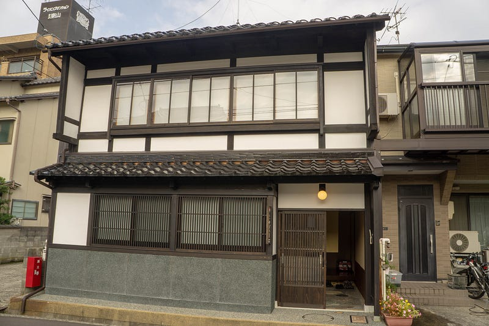
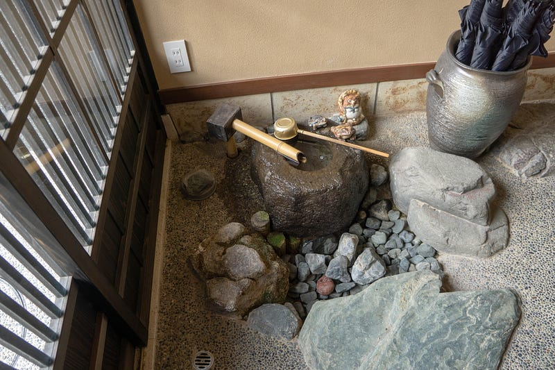
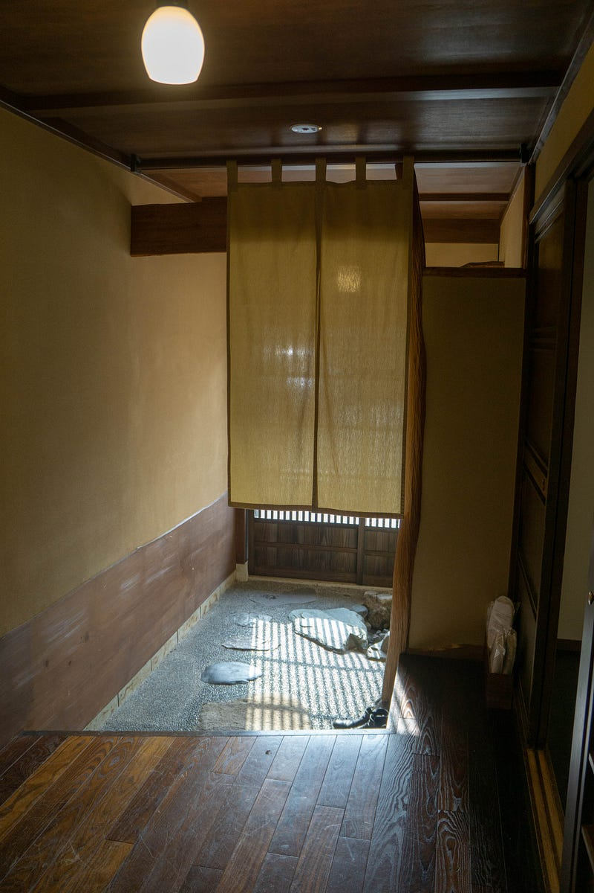
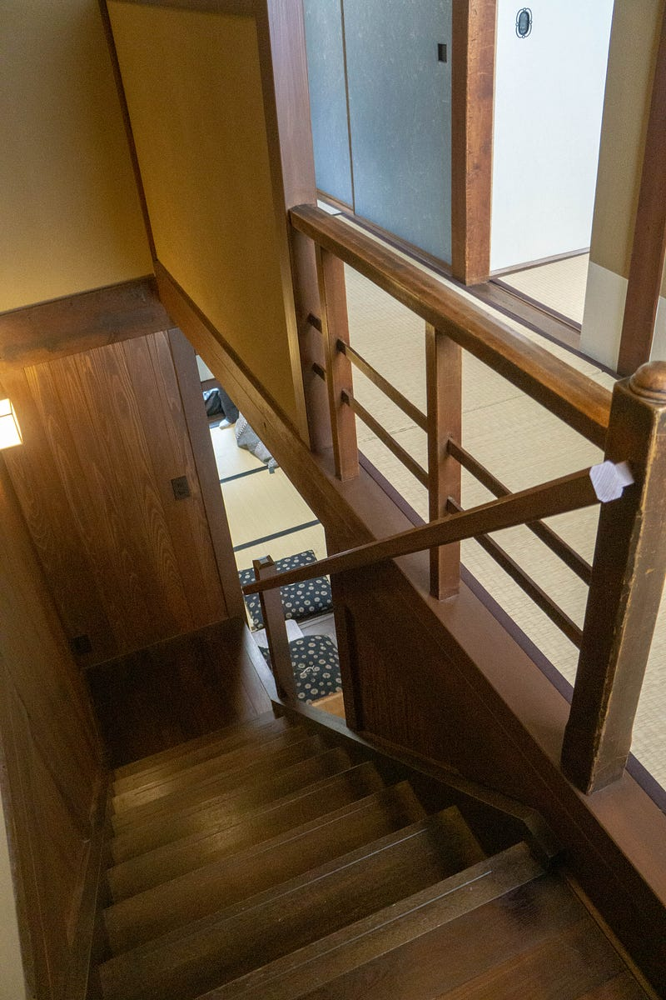
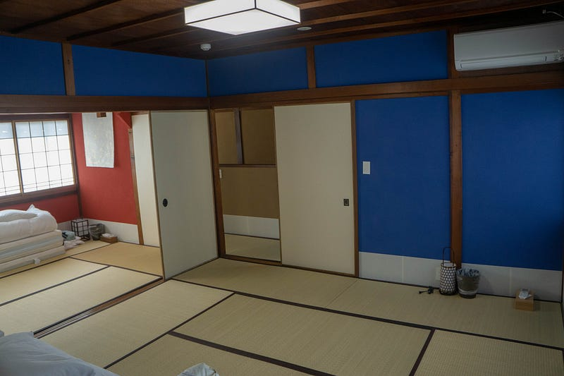
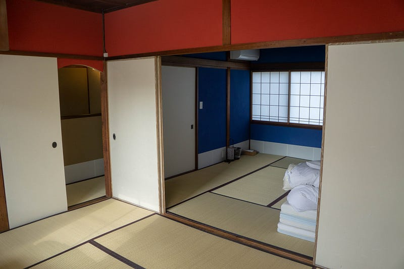
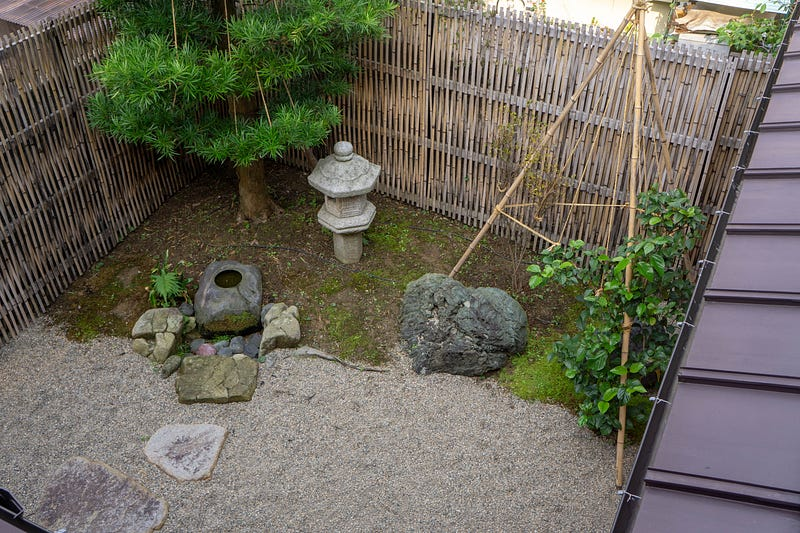
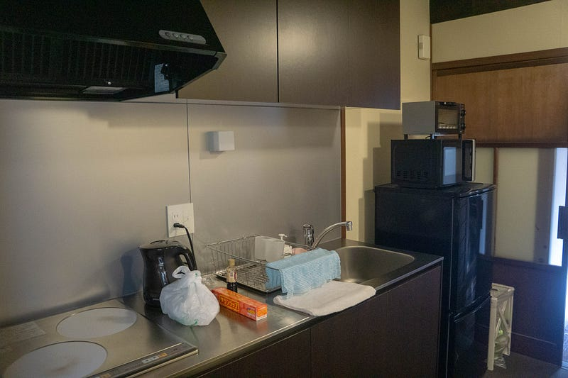
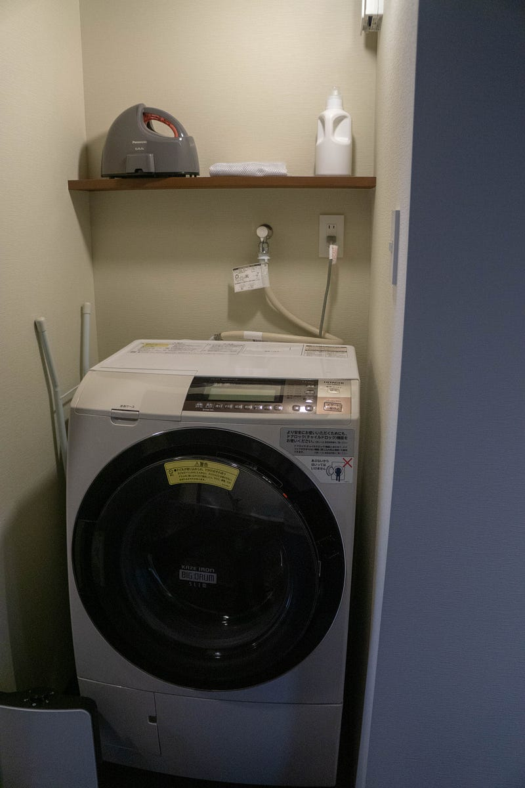

総勢7人で金沢の町屋に宿泊
総勢7人で金沢の町屋に宿泊
我々夫婦、子供三人、母親、自分の妹という組み合わせで旅行に行くことにした。ホテルでもよかったのだが、このパーティーだとホテルでバラバラより、全員一緒のところがいいんじゃないか、と思って金沢の町屋を改装した、一棟単位で借りられる宿泊施設に泊まることにした
6歳、4歳、1歳の子供を連れてどこかに旅行にいくというのはなかなか難がある。なにせホテルへいくとこの組み合わせで部屋を取るのは難しい。特に、子供が全員「お父さんお母さん両方と一緒じゃなきゃ寝たくない」とか言う場合）
それならば、ということで探したら町屋を改装したところを見つけたので、そこに泊まることにした。
昭和から続く金沢の伝統的な雰囲気を受け継いできた「かげろひ」。 改修前から残る玄関の蹲(つくばい)と飛び石、庭園を覗かせる雪見障子からは当時の風情を感じられます。 ダイニングと居間の奥には、季節を映し出す庭園が広がります。…www.kanazawa-machiya-inn.com
外観はこんな感じ。東山茶屋街の近くで、完全なる住宅街の中にある。我々みたいに金沢の土地勘がない人にはこの場所にたどり着くのにどれくらいかかるのかわかりにくくて不安になるけど、実際はすごい色んなところに近かった。

バスは周遊バスが15分に1回程度来るので、バスだけの移動でも問題無かったし、近江町市場までも大人なら歩いて行ける距離。うちは子供がたくさんいて色々面倒くさいので移動はもっぱらタクシーだった


趣があってなかなか良い。一階は床暖房付き。二階はエアコンのみ。

二階への階段。

二階は基本寝室だけ。

ちゃんと改装されててよい感じだけど、二階はすこしがたがたと風の音がきになった。すきま風は感じなかったけど、真冬は寒いのではないだろうか。

中庭もある。

台所も完備。食器等は全部揃ってるんだけど、サランラップと調味料がないのは要注意（写真のサランラップは近くのコンビニで買った）。

洗濯機もあるので、マジたくさんの子連れにはたすかる。
ちょっと色々映り込んでた事情があって他の写真は割愛したけど、一階の趣もよかった。お茶もコーヒーもたっぷり用意してあったし、スタッフの対応もよかった（普段は外国の方が泊まることが多いのか、何回も「日本語ワカリマスカ？」的な対応をされたのが若干うざかった）
近江町市場で買ってきた食材で夕飯にしたり、布団でゴロゴロしながら団欒したり、かなり良い感じだった。
お値段は一棟借りていくら、なので、なるたけ大勢（最大9人？）で行くのが吉。我々は都会育ちの子供達が「2階建てだーー！！」ってエキサイトしてたし、全員揃って過ごせたし、すごくよかった。似たような状況の方ならおすすめ。